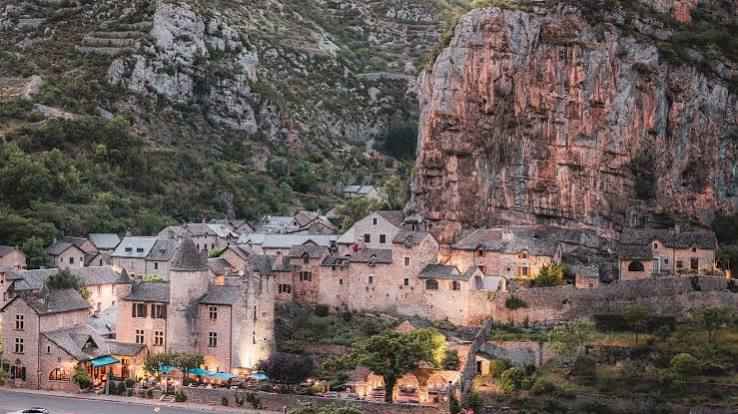
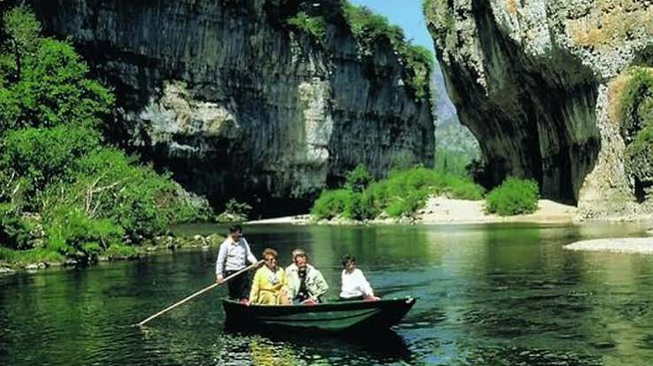

Son nom occitan, souvent traduit par « mauvais trou », dit assez la position resserrée de La Malène, au point de jonction des routes traversant les causses de Sauveterre et Méjean. Ce carrefour naturel, au cœur des gorges du Tarn, en a fait de tout temps un lieu de passage obligé, comme en témoignent les nombreux vestiges gallo-romains et préhistoriques retrouvés aux alentours, notamment sur le site de Cauquenas.

La Malène et son manoir, blotti au creux des gorges du Tarn
L’histoire du village se confond avec celle de la famille de Montesquiou, dont le manoir des XVe et XVIe siècles domine encore les toits du bourg. Sous le règne de Louis XIII, alors que le pouvoir royal ordonne de raser les forteresses rebelles, Pierre de Montesquiou obtient que son château soit épargné. La Révolution est en revanche funeste au village : le 31 octobre 1793, le château et une soixantaine de maisons sont livrés aux flammes, laissant sur le rocher de la Barre des traces de suie encore visibles aujourd’hui.
Reconstruit et transformé en hostellerie, le manoir de Montesquiou veille toujours sur La Malène, aujourd’hui distinguée « Petite Cité de Caractère ». Mais c’est surtout la batellerie traditionnelle, héritée du transport des voyageurs et des marchandises sur le Tarn, qui a fait la renommée du village : les barques à fond plat des bateliers demeurent, aujourd’hui encore, le meilleur moyen de découvrir les fameux Détroits des gorges.
🚣
Visite pratique

Les barques des bateliers, embarcation traditionnelle des gorges du Tarn
⏱️
Durée
Environ 1h de visite du village, 1h à 1h30 pour la descente en barque des Détroits
📊
Difficulté
Facile, village de plain-pied au bord du Tarn
🚗
Accès
Cœur des gorges du Tarn, sur la D907bis, entre Sainte-Enimie et Les Vignes
🎟️
Tarif
Village en accès libre, descente en barque payante (embarcadère des bateliers)
✦ Infos pratiques
Manoir de Montesquiou Demeure seigneuriale des XVe-XVIe siècles, aujourd’hui hôtel-restaurant, liée aux seigneurs du même nom
Église Saint-Jean-Baptiste Édifice roman du XIIe siècle, classé Monument historique depuis 1928
Castel Merlet Vestiges présentés comme le plus ancien château connu de France, sur les hauteurs du village
Embarcadère des bateliers Point de départ des descentes traditionnelles en barque vers les Détroits du Tarn
Rocher de la Barre Paroi encore noircie, témoin des incendies de la Révolution de 1793
Roc des Hourtous Panorama emblématique sur le Cirque des Baumes, accessible par sentier depuis le village
Descente en canoë-kayak La Malène est aussi un point de départ apprécié pour la pagaie libre dans les gorges
Fête de La Malène Concours de pétanque, course de côte automobile et feu d’artifice, en juin-juillet
1
Le manoir de Montesquiou
Demeure seigneuriale du XVe siècle, épargnée sous Louis XIII grâce aux services rendus par la famille de Montesquiou, aujourd’hui hostellerie réputée.
2
La descente en barque des Détroits
Embarquement traditionnel avec un batelier pour explorer le passage le plus resserré des gorges du Tarn, entre parois calcaires vertigineuses.
3
L’église Saint-Jean-Baptiste
Édifice roman du XIIe siècle classé Monument historique, conservant le souvenir des victimes malénoises de la Révolution.
4
Le rocher de la Barre
Paroi rocheuse noircie par les incendies de 1793, mémoire vive des heures les plus sombres du village.
5
Le belvédère du Roc des Hourtous
Sentier de découverte menant à l’un des plus beaux panoramas sur le Cirque des Baumes et le canyon du Tarn.
🏆
Reconnaissance & patrimoine
🏅
Petite Cité de Caractère
La Malène est labellisée « Petite Cité de Caractère » pour la qualité de son patrimoine bâti préservé au cœur des gorges du Tarn.
⭐ Label PCC
⛪
Église classée Monument historique
L’église romane Saint-Jean-Baptiste, propriété communale, est classée Monument historique depuis le 18 août 1928.
MH depuis 1928
🏞️
Grand Site de France
Le village fait partie du Grand Site de France des gorges du Tarn, de la Jonte et des Causses.
🌍
Réserve de biosphère des Cévennes
La Malène s’inscrit dans la Réserve de biosphère des Cévennes, reconnue par l’UNESCO.
🛶
Les bateliers, gardiens de la tradition des Détroits
La tradition des bateliers de La Malène remonte à l’exploitation ancienne du Tarn comme voie de passage et de transport, dans un défilé si étroit qu’il fut longtemps impossible de le franchir autrement qu’en barque. Les longues embarcations à fond plat, manœuvrées à la perche, permettaient de relier La Malène aux Détroits puis au Cirque des Baumes, à travers les passages les plus resserrés du canyon.
Les Gorges furent dévastées par les invasions des Sarrasins, des Albigeois et des Anglais ; le manoir de Montesquiou lui-même fut brûlé par les Sans-Culottes en 1793.
— Chronique locale des gorges du Tarn
Ce métier de batelier, transmis de génération en génération, s’est perpétué jusqu’à aujourd’hui sous forme touristique : les descendants des passeurs traditionnels font encore découvrir aux visiteurs les défilés du canyon, en particulier les fameux « Détroits », passage le plus resserré des gorges du Tarn où les parois calcaires semblent se refermer sur l’eau turquoise de la rivière.
💬
Le saviez-vous ? Anecdotes malénoises
👑
Le gigot du prince
Une légende locale raconte qu’un cuisinier maladroit ayant laissé tomber un gigot dans la cendre le servit tel quel à un prince de passage, qui s’en régala sans rien soupçonner !
🏰
Le plus vieux château de France ?
Les ruines du Castel Merlet, sur les hauteurs du village, sont parfois présentées par la tradition locale comme les vestiges du plus ancien château connu de France.
🔥
La pierre noircie de la Révolution
Le rocher de la Barre, qui domine le village, porte encore les stigmates sombres — en réalité teintés au brou de noix — des incendies révolutionnaires de 1793.
🚣
Une population divisée par cinq
La Malène comptait plus de 700 habitants au début du XXe siècle ; elle n’en compte plus qu’environ 130 aujourd’hui, tout en restant l’un des villages les plus visités des gorges.
📍
Aux alentours
Sainte-Enimie Plus Beau Village de France voisin, à une dizaine de kilomètres en amont du Tarn.
Les Détroits et le Cirque des Baumes passage le plus spectaculaire des gorges, accessible en barque depuis l’embarcadère du village.
Roc des Hourtous et Point Sublime célèbres belvédères surplombant le canyon, accessibles par le causse Méjean.
Causse Méjean vaste plateau calcaire voisin, domaine des vautours fauves et des chaos de la Cham des Bondons.
Château de la Caze manoir du XVe siècle transformé en hôtel de charme, à quelques kilomètres en aval du Tarn.
Meyrueis petite ville-porte du causse Méjean et de l’Aigoual, à environ 45 minutes de route.